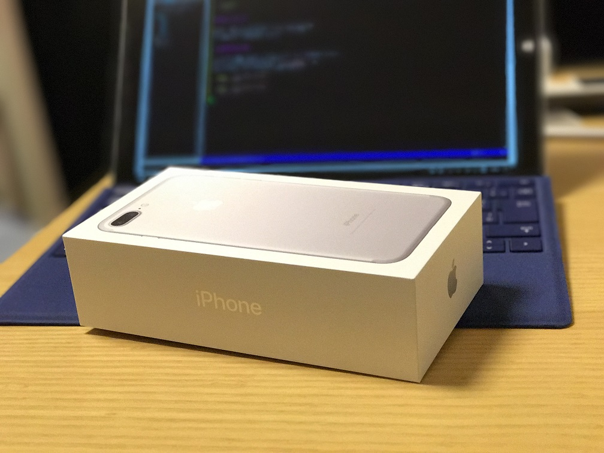

Posts tagged gadget

Zenwatch3をAndroidに接続したらバッテリーが長持ちした
- 2017-03-11
- blog
- gadget, smartwatch
Zenwatch3をAndroidケータイに接続して使用すると、iPhoneで使用した場合に比べて、バッテリー持続時間が大幅に向上した。
Zenwatch3のバッテリー持続時間が短い件
- 2017-02-20
- 2017-03-11
- blog
- gadget, smartwatch
先日、ASUSのZenwatch3を購入したが、買った当初バッテリーの持続時間が思った以上に悪く、 一日どころか夕方にはバッテリーがなくなりそうな状態になってしまっていた。
iPhone 7 Plus に機種変更した話
- 2016-10-27
- 2016-10-31
- blog
- gadget, smartphone

先日、iPhone 7 Plus をドコモオンラインショップで購入しました。
今さらSmart Keyboardを購入した話


iPad Pro 9.7を買ってから今まではキーボードにMicrosoftのUniversal Mobile Keyboardを使っていましたが、やはりキーボードとiPadと2つのデバイスを持ち歩くのが煩わしく感じてきたので、先月あたりからSmartKeyboardが欲しくなってきました。
VAIO Phone Bizを購入した話
- 2016-07-17
- blog
- gadget, smartphone


VAIO Phone Biz を買って１ヶ月ほど経ったので、簡単に感想を書いてみたいと思います。